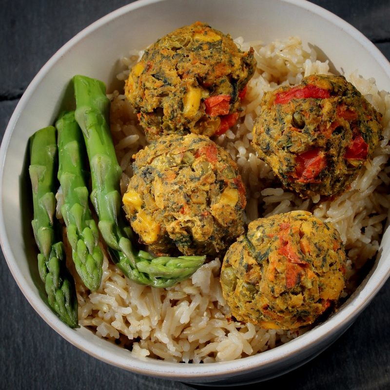

Veggie Balls

Copycat Veggie Balls
Since the Covid lockdown, I haven't been able to go to IKEA® where they serve delicious veggie balls. So in the true self-assemble spirit that makes it so famous, I set out to make a clone.
Ingredients
- ¼ cup low-sodium vegetable broth
- 1 cup diced white onion
- ½ cup diced carrots
- ½ cup diced red bell pepper
- 1 cup frozen corn
- ½ cup frozen peas
- 1 teaspoon water, or more as needed
- ¾ cup cooked spinach
- 1 (15 ounce) can no-salt-added chickpeas, drained, liquid reserved
- 1/2 cup red lentil flour
- ½ cup chickpea flour
- ¼ cup nutritional yeast
- ⅛ cup chopped fresh flat-leat parsley
- 2 teaspoons garlic and onion seasoning
- 1 teaspoon chopped fresh sage
- ½ teaspoon ground turmeric
- ⅛ teaspoon ground white pepper
Steps
- Heat vegetable broth in a skillet over medium heat; add diced onion, carrots, and bell pepper until softened, about 5 minutes. Stir occasionally. Add corn and peas. Cook until the corn and peas are warmed through, 3 to 5 minutes. Add water if needed to keep it from burning. Set aside to cool.
- reheat the oven to 375 degrees F (190 degrees C). Line a large baking sheet with parchment paper.
- Squeeze cooked spinach to drain. Pulse chickpeas and drained spinach together in the bowl of a food processor 3 times. Add red lentil flour, chickpea flour, yeast, parsley, seasoning, sage, turmeric, and white pepper. Pulse another 3 times. Add the cooked vegetable mixture to the food processor. Pulse 5 more times. The final result should leave the chickpeas coarse and the vegetables and herbs chunky with visible pieces of bell pepper, corn kernels, and peas.
- Mix dough by hand to ensure all the seasoning, flours, and vegetables are fully incorporated. The dough should be sticky, not dry. Add a bit of chickpea liquid if necessary. Let rest for 10 minutes.
- Scoop out dough to make 30 balls, arranging them on the prepared baking sheet with about an inch separation.
- Bake in the preheated oven until browned, 25 to 30 minutes. Serve immediately.